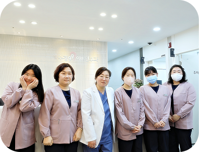

박수경99이비인후과는
수면클리닉
수면진료, 수면다원검사, 검사결과 확인까지-
원스톱으로 한번에!
다양한 수면장애의
원인과 증상
수면장애의 원인은 다양합니다. 수면장애 문제가 1개월 이상 지속될 시
수면검사 클리닉에서 정확한 수면장애의 원인을 규명하고 적절한 치료를 받는 것이 좋습니다.
수면장애 질환
수면무호흡증
코골이
이갈이
불면증
수면장애
코 고는 사람 중 절반 이상이 겪는
수면무호흡증이란?
수면무호흡증은 ‘자는 동안 숨쉬기를 멈추는 증상’을 말합니다.
수면무호흡증은 폐쇄형, 중추형, 혼합형 3가지로 구분하는데, 이중 폐쇄형이 가장 흔합니다.
정상적인 수면상태
수면무호흡증 상태
수면무호흡증이 오게 되면
혈압, 심근경색, 뇌출혈 같은 질환의 이환율이 올라갑니다.
산소 공급이 떨어지게 됩니다.
혈중 산소포화도가
90% 이하면 저산소증을 보이고
85% 이하면 심혈관 및 뇌혈관계에 영향을 주며,
80% 이하면 당장 치료받으시기를 권유합니다.
74% 이하면 입술이 파래지는 청색증이 올 수 있으며
69% 이하면 기절할 위험이 있습니다.
50%대에서는 사망에 이를 수도 있어 매우 위험합니다.
박수경99이비인후과
수면무호흡증 치료방법
수면무호흡증 치료에는 자세치료와 양압기치료가 있습니다.
수면검사센터에서 폐쇄성 수면무호흡증으로 진단 받을 경우, 프리미엄 양압기를 처방해드립니다.
수술적 치료
양압기 치료
왜?
박수경99이비인후과 수면클리닉인가요?
박수경99참이비인후과는 이비인후과 전문의 대표원장이 직접 진료합니다.
다양한 수면장애 발생 원인을 이해하고 다룰 수 있는 임상 경험이 풍부한 전문의의 전문적인 치료가 필요합니다.

1
이비인후화 전문의 원장의
섬세한 맞춤 진료
2
프리미엄 양압기로
병행 치료
3
최적의 수면 환경을 위한
쾌적하고 아늑한 검사실
박수경99이비인후과
수면다원검사
수면다원검사는 다양한 수면질환을 진단하는 필수적 검사입니다.
박수경99이비인후과의 수면클리닉은 수면전문의 인력, 수면다원검사 시설로
정확한 진단과 편리한 원스톱 서비스를 약속드립니다.
수면다원검사 과정
- 수면무호흡
진단 - 수면다원검사
- 양압압력
적성검사 - 양압기 처방
- 양압기 대여 및
요양비 청구
수면다원검사 대상
- 01수면무호흡이 의심될 경우
- 02코골이 수술 전, 수면무호흡 수술 전, 양압기 치료 전
- 03충분한 수면 후에도 졸음, 만성피로
- 04수면 중 뒤척임이 많은 경우
- 05만성 불면증
- 06수면 중 이상행동을 보이는 경우
검사 시 주의사항
박수경99이비인후과의 수면클리닉 수면다원검사는 본인의 수면 패턴에 따라 언제든지 자유롭게 검사 진행할 수 있습니다.
- ✓검사 전날 평소처럼 주무시고, 당일 낮잠은 피하세요
- ✓검사 전날 밤에 수면제 같은 약을 복용하지 마세요
- ✓검사 당일에 술, 커피, 담배 등을 피하세요
- ✓검사 당일 머리를 감고 스프레이,오일 등을 사용하지 마세요
- ✓검사 당일에 평소처럼 저녁 식사를 하신 뒤 방문해 주세요
건강보험 적용 항목
1
코골이·수면무호흡증 관련 수면다원검사
코골이나 수면무호흡증 등의 수면과 관련된 증상이 있는 환자가
진료 및 검사에서 특정 이상 소견을 보이는 경우.
건강보험이 적용되지 않습니다.
- 일반보험
- 보호 1종
- 보호 2종
- 소아(15세 이하)
- 130,960원
- 0원
- 63,570원
- 32,740원
2
기면증·과수면증 관련 수면다원검사
기면증이나 과수면증 관련 증상 설문 [ESS score]가
10점 이상이며, 기면증 및 과수면증 증상이 동반된 경우.
건강보험이 적용되지 않습니다.
- 일반보험
- 보호 1종
- 보호 2종
- 소아(15세 이하)
- 130,960원
- 0원
- 63,570원
- 32,740원
3
기면증·과수면증 관련 다중수면잠복기검사
수면다원검사 급여기준에 따라 시행한 수면다원검사에서
7시간 이상의 총 검사 시간이 확인된 환자를 대상으로 시행.
검사를 시행하는 경우, 건강보험이 적용되지 않습니다.
- 일반보험
- 85,340원
4
양압기 수면다원검사 (양압적정검사)
수면무호흡증 확진 후 양압적정검사를 받는 경우
[ 양압기 + 수면다원검사 = 양압적정검사 ]
- 일반보험
- 130,960원
5
양압기 렌탈
양압기 렌탈 초기 3개월(순응기간)은 모든 환자에게 적용되며,
이 기간 동안 4시간 이상 사용이 70% 이상인 경우
3개월 단위로 연장 가능합니다.
- 자동형
- 지속형
- 이중형
- 마스크
- (순응통과시)
- 월 17,800원
- 월 15,200원
- 월 25,200원
- 월 19,000원
- 순응기간
- 월 44,500원
- 월 38,000원
- 월 63,000원
- 연 1회 보험적용
박수경99이비인후과
오시는 길
서울특별시 영등포구 시흥대로 675 , 삼성YJ그랜드빌딩 6층 (국민은행 건물)
한림대강남성심병원 본관과 신관 건물 사이
*기본 1시간 무료 주차 (기계식 주차장, SUV 주차 불가)
진료시간
- 평 일 09:30 ~ 18:30
- 점심시간 13:30 ~ 14:30
- 토 요 일 09:00 ~ 14:00 ※ 토요일은 점심시간 없이 진료
※ 일요일·공휴일 휴진
진료예약